Ministry of Tourism Lebanon
DISCOVER LEBANON
Despite its small size, Lebanon hosts over 9,000 plant species, more per square kilometer than almost anywhere else in the Middle East. It sits at the intersection of three biogeographic zones, giving it an ecological richness far beyond its area.
Eco-tourism here means engaging with a natural world that is genuinely fragile. Lebanon has lost much of its forest cover, its rivers face pollution, and its coastline is under development pressure. Choosing responsible eco-tourism, supporting protected areas, local guides, and conservation efforts, is one of the most meaningful things a visitor can do.
From the UNESCO cedar groves of the north to the turtle nesting beaches of the south, Lebanon's natural world rewards those who slow down and travel with care.
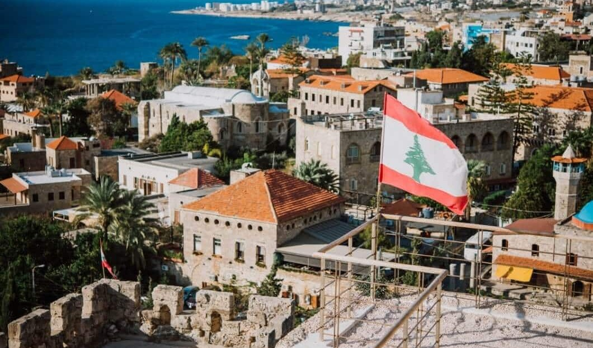
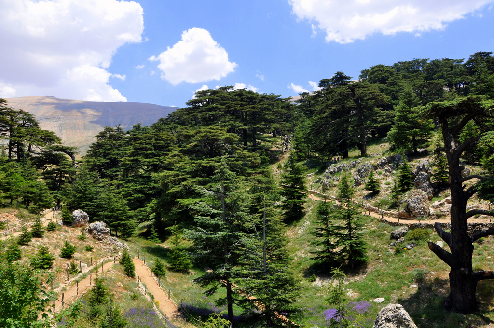
Lebanon's largest nature reserve, covering 550 km² of cedar forests, wolves, golden eagles, and over 250 bird species. A network of hiking trails winds through the reserve with some of the finest views in the country.
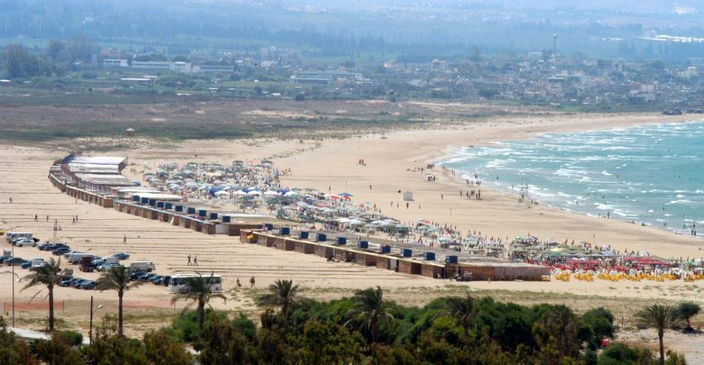
Protects a stretch of natural sandy coastline that serves as a critical nesting ground for endangered loggerhead and green sea turtles. Guided nighttime turtle-watching walks (June to September) are one of Lebanon's most unforgettable eco-experiences.
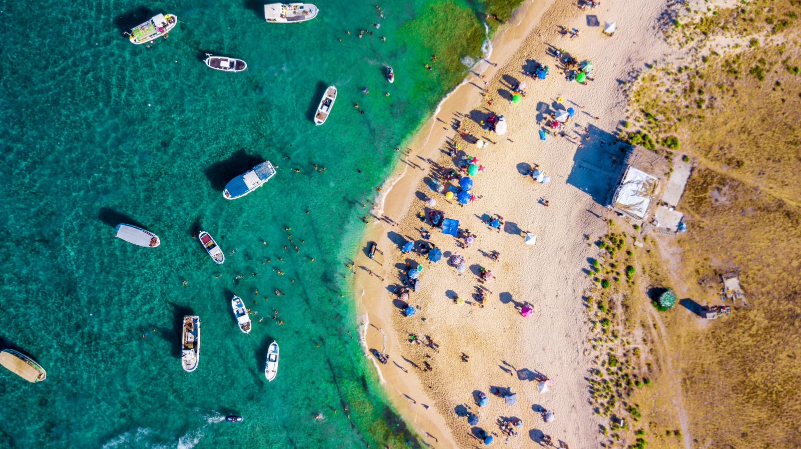
Lebanon's only marine reserve and a UNESCO Ramsar wetland. The islands host sea turtles, monk seals, and migratory birds. Clear shallow waters make it excellent for snorkeling, with boat trips available from Tripoli in summer.
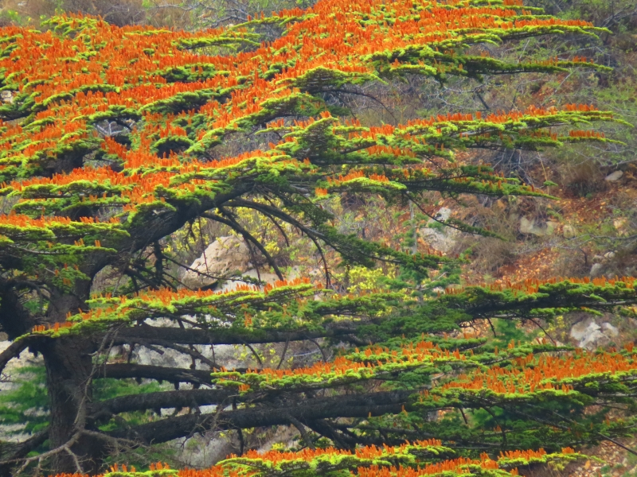
A dense mountain forest above Ehden sheltering rare plant species found nowhere else on Earth, cedar, fir, juniper, and wild pear. Entry requires a permit, which helps preserve its remarkable ecological integrity.
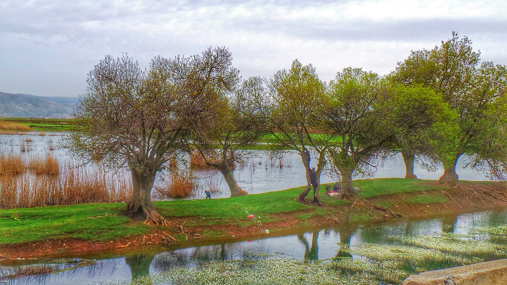
Lebanon's largest freshwater wetland and one of the most important bird habitats in the eastern Mediterranean. Over 260 species recorded here, including flamingos, white pelicans, and migratory raptors, a paradise for birdwatchers.
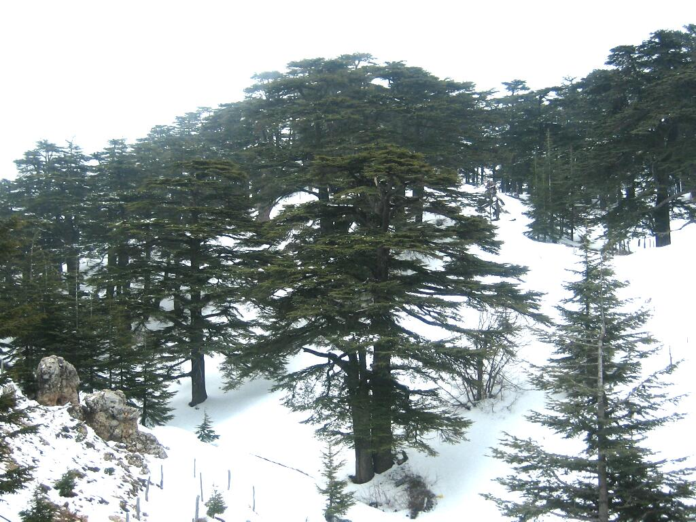
An ancient cedar grove near Bsharri with trees over 1,000 years old. A UNESCO World Heritage Site, carefully protected and managed. Walking among trees that predate the Crusades is a quietly humbling experience.

Lebanon's most dramatic landscape, a deep limestone gorge with walls rising over 1,000 meters, sheltering ancient monasteries, hermit caves, and a mountain river. The valley floor trail is one of Lebanon's finest hikes.
The ancient Adonis River flows from its sacred spring at Afqa, where the river emerges from a cave at the base of a towering cliff, down through a dramatic gorge to the sea near Byblos. One of Lebanon's most beautiful and historically resonant walks.
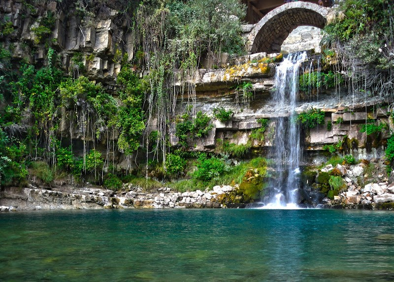
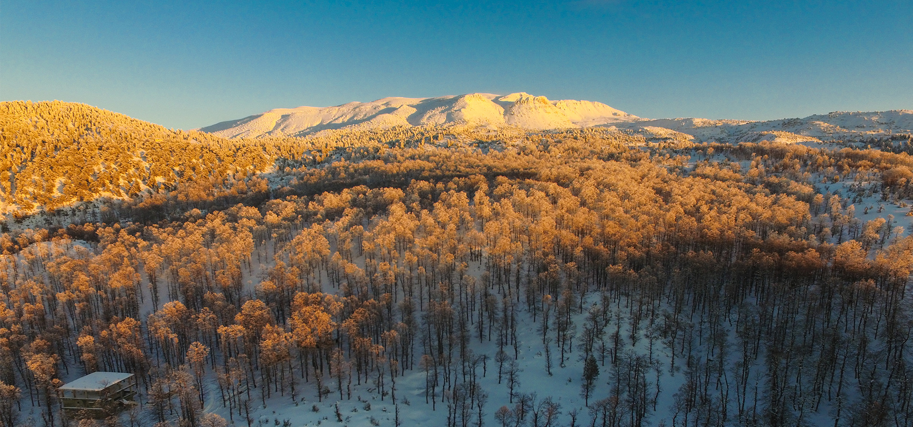
Lebanon's most ecologically pristine region, dense cedar, pine, and oak forests cut through by rushing rivers. Largely undeveloped and rarely visited, with seasonal waterfalls and hidden valleys that feel entirely untouched.
A serene highland plateau above 1,500 meters, centered on a sacred mountain lake surrounded by wildflower meadows. Extraordinary silence, rare birdlife, and panoramic views across the Beqaa Valley to the Anti-Lebanon mountains.
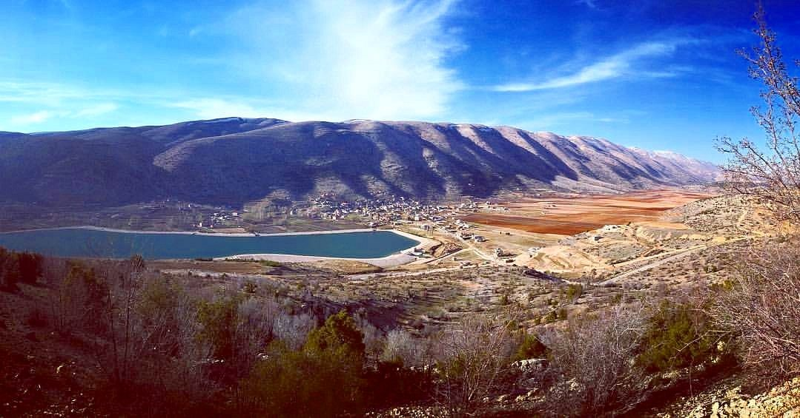
Lebanon's compact geography means an extraordinary range of outdoor activities is available within a small area. From mountain hiking to sea kayaking, the country offers nature experiences for every level of fitness and interest.
Hiking & Trekking
The Lebanon Mountain Trail stretches 440 km from north to south, passing 75+ villages, forests, and mountain scenery. It can be explored in sections or as a full multi-week journey.
Birdwatching
Lebanon lies on a major migration route. Ammiq Wetland, Palm Islands, and the Chouf Reserve are prime sites, especially during spring and autumn migrations.
Skiing & Snow Sports
Four ski resorts operate from December to March at altitudes up to 2,800 meters, making it possible to ski in the morning and swim in the sea later the same day.
Mountain Biking
The forests and mountain roads of the Chouf, Keserwan, and northern Lebanon offer excellent biking routes through cedar forests and alpine villages.
Sea Turtle Conservation
The Tyre Coast Reserve organizes guided turtle walks during nesting season (June–September), allowing visitors to observe endangered turtles nesting on the beach.
Diving & Snorkeling
The Palm Islands and underwater ruins at Tyre offer the rare chance to snorkel among Roman columns, anchors, and amphora from an ancient city.
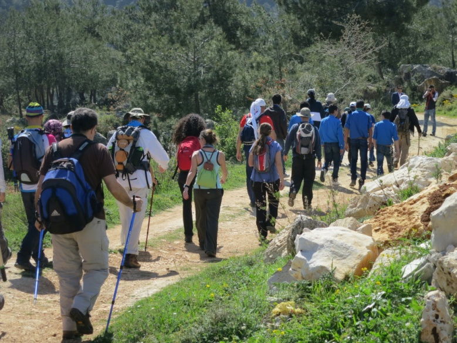
|
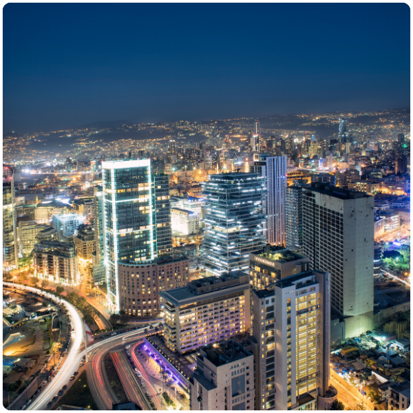 BEIRUTLebanon's vibrant capital, known for its seaside Corniche, museums, nightlife, and mix of historic and modern architecture. |
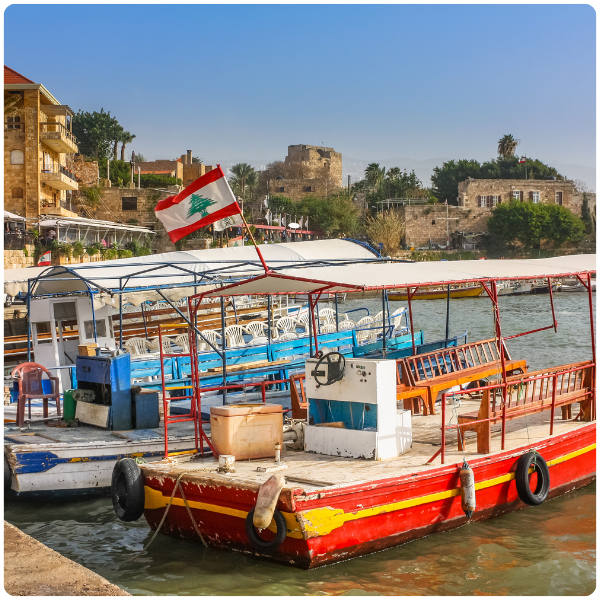 BYBLOS (JBEIL)One of the world's oldest continuously inhabited cities, with an ancient port, Crusader castle, and charming coastal old town. |
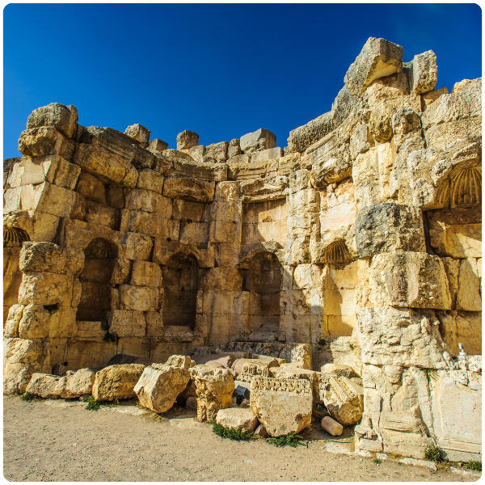 BAALBEKHome to the largest and best-preserved Roman temples in the world. A UNESCO World Heritage Site and a must for history lovers. |
|
|
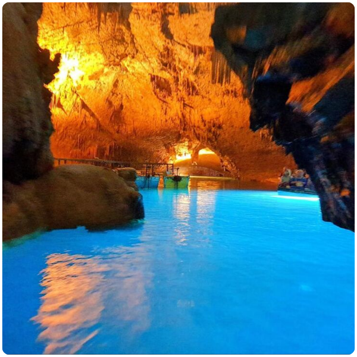 JEITA GROTTOA spectacular system of limestone caves filled with stalactites and stalagmites, Lebanon's most popular natural attraction. |
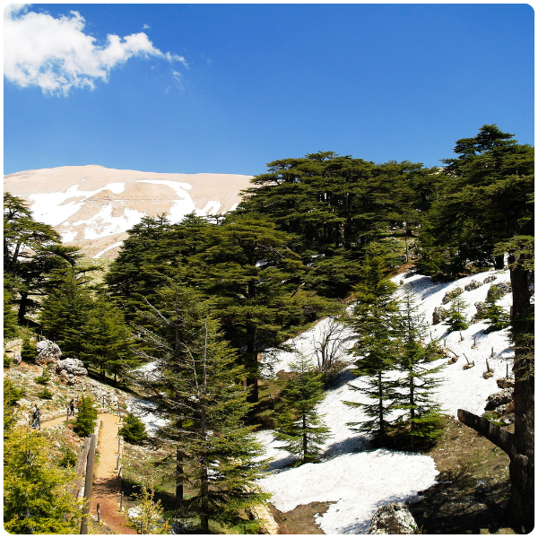 CEDARS OF GODA UNESCO grove of ancient cedars near Bsharri, some over 1,000 years old. Lebanon's most sacred and moving natural site. |
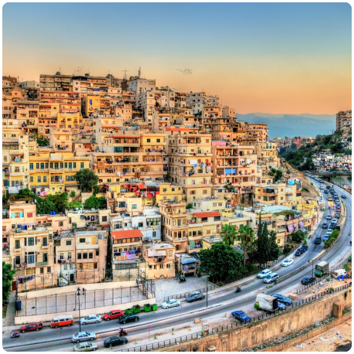 TRIPOLILebanon's second city, with one of the Arab world's best-preserved medieval old cities, Mamluk souks, hammams, and a Crusader citadel. |
|
|
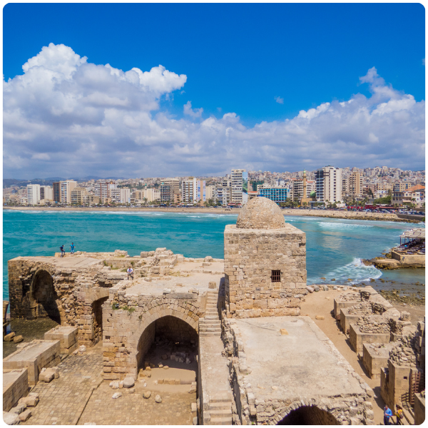 SIDON (SAIDA)A historic coastal city famous for its Sea Castle, old markets, and Phoenician roots. Ancient history and vibrant daily life side by side. |
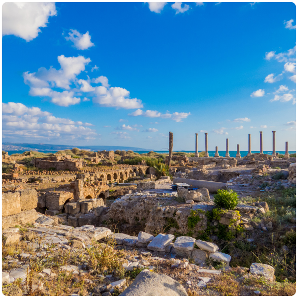 TYRE (SOUR)A UNESCO World Heritage Site known for its Roman ruins, ancient hippodrome, natural sandy beaches, and extraordinary underwater archaeological remains. |
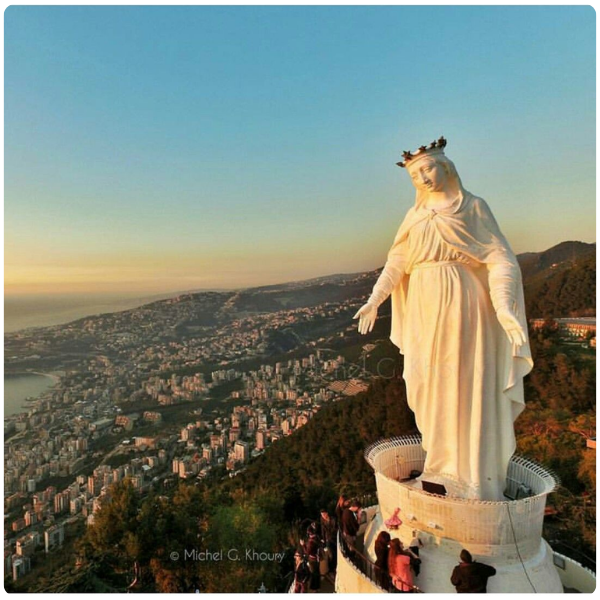 HARISSAA hilltop pilgrimage site above the Bay of Jounieh, home to the statue of Our Lady of Lebanon and panoramic coastal views. |
|
|
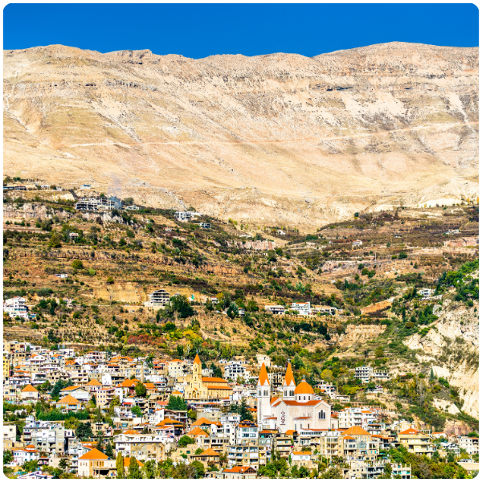 QADISHA VALLEYA UNESCO valley of sheer limestone cliffs, ancient monasteries, and mountain river trails. Lebanon's finest hiking destination. |
Entrance and tour fees from Lebanon's reserves directly fund conservation staff and monitoring programs. Without eco-tourism income, many reserves would struggle to operate. Every visitor contributes to their survival.
Eco-tourism creates livelihoods for rural communities as guides, hosts, and food producers, giving people a direct economic stake in protecting the natural environment around them.
Lebanon's biodiversity faces threats from habitat loss, hunting, and pollution. Eco-tourism builds the economic case and public awareness needed to protect what remains.
Most of Lebanon's tourism is concentrated in Beirut and coastal towns. Eco-tourism draws visitors to Akkar, the Chouf, and the Beqaa, spreading economic benefit more fairly and reducing pressure on overcrowded urban sites.
Every person who hikes the Mountain Trail or watches a turtle nest returns home with a personal stake in Lebanon's natural world. Eco-tourism builds the conservation constituency Lebanon urgently needs.
Lebanon's mountains, forests, and coastline cannot be exported or depleted. In a country facing repeated economic crises, eco-tourism is one of the most resilient and renewable assets available.
©2026 All Rights Reserved - Ministry of Tourism Lebanon